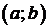
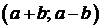

Из пары натуральных чисел  
а) Можно ли за несколько таких ходов получить из пары пару, большее число в которой равно 400?
б) Можно ли за несколько таких ходов получить из пары  пару ?
пару ?
в) Какое наименьшее может быть в паре  , из которой за несколько ходов можно получить пару
, из которой за несколько ходов можно получить пару  ?
?